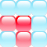
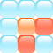
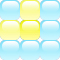
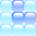
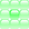
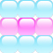

За да се движиш нагоре, натисни стрелката нагоре (↑) от клавиатурата.
За да се движиш надолу, натисни стрелката надолу (↓) от клавиатурата.
За да се движиш наляво, натисни лявата стрелка (←) от клавиатурата.
За да се движиш надясно, натисни дясната стрелка (→) от клавиатурата.
За да вземеш или поставиш фигура, натисни V (V) от клавиатурата.
За да избереш коя фигура искаш да вземеш, ако фигурите са повече от една, натисни SPACE, за да ги разместиш.
Има 8 вида фигури:
     Всяка фигура се взима от централната й плочка, обозначена в по-тъмен цвят.